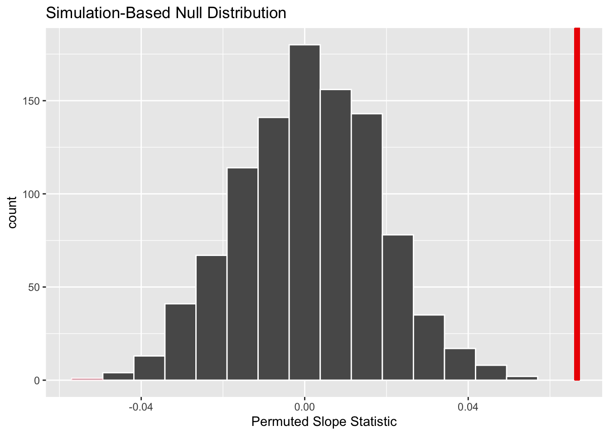
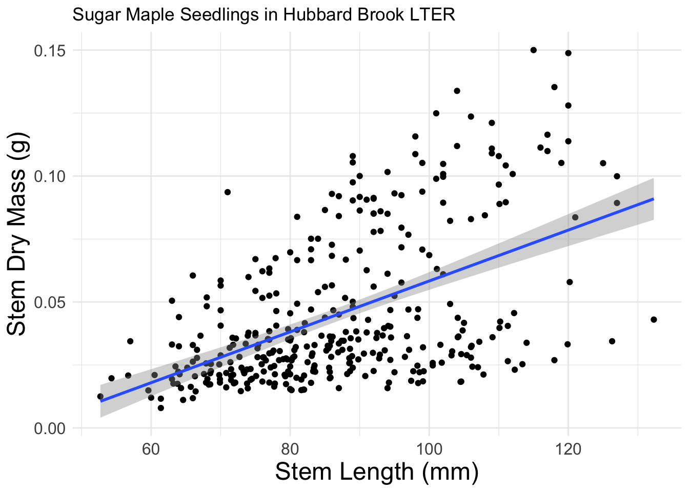
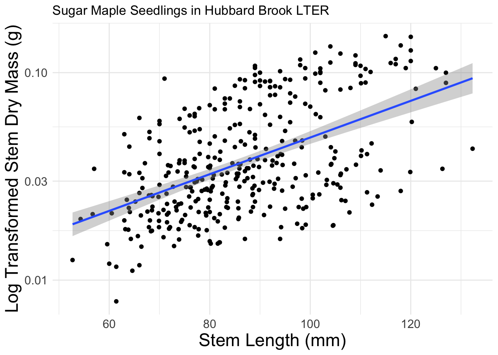

Question 8 (Interpret Confidence Interval): A lot of groups either did not include the population or they stated the population was the 13 marshes and not all marshes on the East coast. For this question, only one or two groups said the population was about crabs!
Question 11 (Bootstrap Assumptions): A lot of groups did not talk about marshes and instead mentioned resampling. Some also mentioned that the population was crabs :(
And visualizing where our observed statistic fell on the distribution
visualise(null_dist) +shade_p_value(obs_stat = obs_slope, direction ="two-sided") +labs(x ="Permuted Slope Statistic")

What would you estimate the p-value to be?
And calculated the p-value
get_p_value(null_dist, obs_stat = obs_slope, direction ="two-sided")
Warning: Please be cautious in reporting a p-value of 0. This result is an
approximation based on the number of `reps` chosen in the `generate()` step.
See `?get_p_value()` for more information.
# A tibble: 1 × 1
p_value
<dbl>
1 0
What would you decide for your hypothesis test?
How would this process have changed if we used theory-based methods instead?
Approximating the permutation distribution
A \(t\)-distribution can be a reasonable approximation for the permutation distribution if certain conditions are not violated.
ggplot(data = hbr_maples, mapping =aes(x = stem_length, y = stem_dry_mass) ) +geom_point() +geom_smooth(method ="lm") +labs(x ="Stem Length (mm)",y ="Stem Dry Mass (g)",title ="Sugar Maple Seedlings in Hubbard Brook LTER" ) +theme_minimal() + my_theme
`geom_smooth()` using formula = 'y ~ x'

. . .
What should we do?
Variable transformation!
ggplot(data = hbr_maples, mapping =aes(x = stem_length, y = stem_dry_mass) ) +geom_point() +geom_smooth(method ="lm") +labs(x ="Stem Length (mm)",y ="Log Transformed Stem Dry Mass (g)",title ="Sugar Maple Seedlings in Hubbard Brook LTER" ) +theme_minimal() +scale_y_log10() + my_theme
`geom_smooth()` using formula = 'y ~ x'

Are these conditions required for both methods?
. . .
Simulation-based Methods
Linearity of Relationship
Independence of Observations
Equal Variance of Residuals
Theory-based Methods
Linearity of Relationship
Independence of Observations
Normality of Residuals
Equal Variance of Residuals
What happens if the conditions are violated?
. . .
In general, when the conditions associated with these methods are violated, the permutation and \(t\)-distributions will underestimate the true standard error of the sampling distribution.